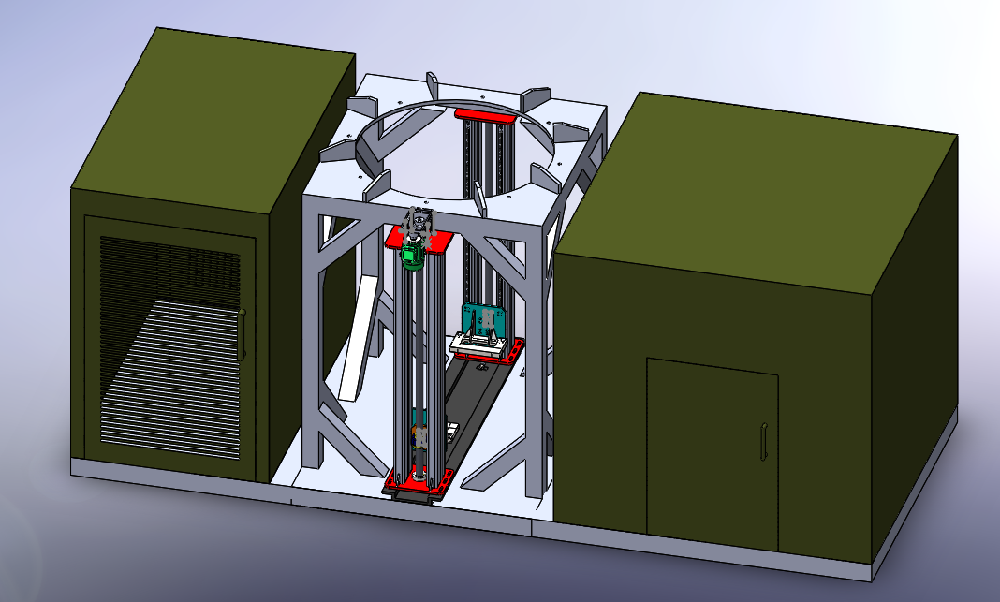

3D CAD CONCEPT / DESIGN PRESENTATION
Cabin-Integrated
Vertical Lifting System
A 3D CAD concept combining a central vertical lifting arrangement with adjacent cabins. The model demonstrates a proposed system in which equipment can be raised for use and lowered again once the task is complete.


Concept modeling contribution
Developed the 3D CAD assembly to bring together the cabins, supporting frame and central lifting arrangement within one proposed layout.
The model was created to communicate the design idea and help others visualize how the overall system could be arranged.
Proposed movement & project stage
The concept allows equipment placed within the central lifting arrangement to move upward for use, then return to a lower position when the work is finished.
This project is a CAD concept for presentation purposes. It has not been manufactured.